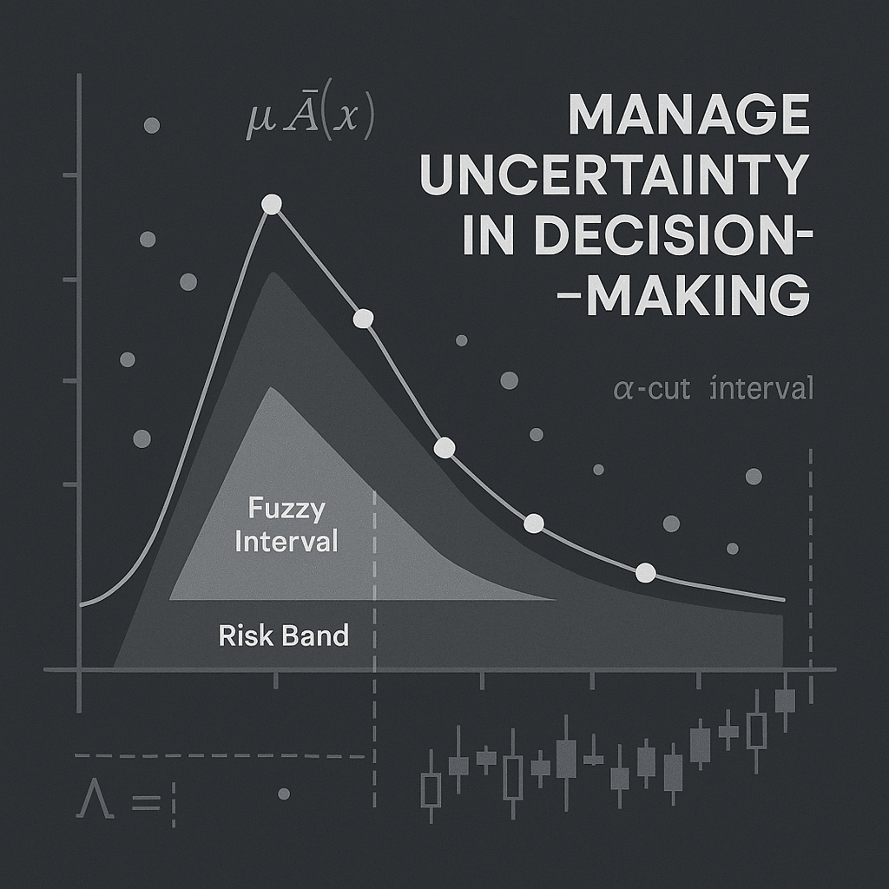

Strategy
Modeling Uncertainty: How Fuzzy Copulas Strengthen External Intelligence
In global markets, uncertainty is not an inconvenience; it is the environment. Economic dependencies shift with political decisions, commodity prices react to shocks in unexpected ways, and asset relationships that look stable on paper can change dramatically in a few days. A new academic study by Professor (associate) Irina Georgescu (Bucharest Univ. of Economics) and Mission Grey’s Jani Kinnunen takes this challenge seriously. Instead of treating uncertainty as a statistical error to be minimized, their research integrates uncertainty into the core of the model using a fuzzy copula framework.

Uncertainty Is the New Normal
In global markets, uncertainty is not an inconvenience; it is the environment.
Economic dependencies shift with political decisions, commodity prices react to shocks in unexpected ways, and asset relationships that look stable on paper can change dramatically in a few days. Traditional statistical models often assume clean data and fixed parameters, but today’s world rarely provides either.
A New Approach to Dependence and Risk
A new academic study by Professor (associate) Irina Georgescu (Bucharest Univ. of Economics) and Mission Grey’s Jani Kinnunen takes this challenge seriously. Instead of treating uncertainty as a statistical error to be minimized, their research integrates uncertainty into the core of the model using a fuzzy copula framework. It offers a way to understand dependence and risk when markets behave unpredictably and data refuses to settle into neat patterns.
The central idea is simple but powerful: rather than estimating a single precise parameter for the relationship between assets like gold and oil, or any time-series data of two or more variables, the model treats key parameters as fuzzy intervals.
These intervals reflect both the most likely values and the wider range of plausible values; a more honest description of markets influenced by geopolitics, volatility, and incomplete information. As these fuzzy parameters flow through the model, dependence measures and risk indicators become intervals too. Instead of providing one Value-at-Risk number that suggests false precision, the approach delivers a realistic band that captures both risk and the uncertainty around it.
The Human Element in Modeling Uncertainty
An insight emerging from this research is that uncertainty is not only a statistical issue; it is a cognitive one. Analysts, policymakers, and executives frequently struggle with overconfidence, anchoring, and the desire for a single “right answer.” Traditional models reinforce this bias by producing crisp coefficients and point estimates that appear more precise than reality warrants.
Fuzzy copulas challenge this mindset. By producing interval-based dependence measures, they encourage analysts to think in terms of ranges, plausible zones, and degrees of belief. This subtle shift has powerful implications: It reduces the illusion of precision in volatile environments. It invites decision-makers to consider multiple scenarios instead of fixating on the central forecast.
It aligns analytics with how humans naturally think about uncertainty, not as a defect, but as a structural feature of complex systems.
As organizations integrate advanced uncertainty modeling into their workflows, the greatest transformation may happen not in the algorithms, but in the mindset of the people using them.
From Data to Decision: Operationalizing Fuzzy Risk
A key challenge in real-world analytics is turning sophisticated models into actions. Fuzzy copulas make this step easier by producing outputs that map directly onto decision thresholds.
For example: (i) A fuzzy tail-dependence interval can be linked to tiered risk protocols (low, moderate, or severe), useful in computations or, e.g., in risk matrices; (ii) A fuzzy Conditional VaR band can inform dynamic capital buffers or inventory adjustments; (iii) A fuzzy early-warning indicator can be integrated into dashboards tracking geopolitical tension, supply-chain vulnerability, or cross-asset contagion.
In this way, fuzzy analytics do not replace human judgment; they structure it, offering a disciplined way to incorporate ambiguity into operational choices. For External Intelligence systems like those at Mission Grey, this makes the insights not only academically innovative but practically deployable.
The Road Ahead: Hybrid Intelligence Systems
Looking forward, fuzzy copulas represent only one piece of a broader shift toward hybrid intelligence; systems that combine computational modeling with human intuition and contextual understanding.
Future research is heading toward: (i) Fuzzy–Bayesian hybrids, which allow uncertainty about both data and priors; (ii) Neuro-fuzzy systems, blending machine learning with interpretable fuzzy rules; (iii) Fuzzy copula networks, enabling full-system modeling of multi-asset and multi-risk interdependencies; (iv) Adaptive fuzzy analytics, where the uncertainty intervals themselves evolve as new information arrives.
These developments point to a future where uncertainty is not an obstacle but a structured input, an integral part of how external intelligence is gathered, processed, and used.
What the Analysis Reveals
When tested on ten years of gold and oil futures data, the fuzzy copula method uncovered something traditional models miss: how dependence and tail risk truly evolve over time. The dependence can be between the upside tails, the downside tails, or symmetrically over given distributions.
Rolling-window analysis showed that extreme co-movements intensify during turbulent periods and that fuzzy Conditional VaR provides a clearer and more conservative view of deep downside risk than classical techniques. In other words, the model does not simply estimate risk; it exposes the uncertainty embedded within it.
Why This Matters for External Intelligence
This research is directly relevant to the mission of Mission Grey. External Intelligence requires models that can deal with ambiguity, shifting conditions, and incomplete information. Understanding changing dependencies, early warning signals, and the propagation of geopolitical or economic shocks depends on analytical tools that reflect how the real world behaves, not how we wish it behaved.
Jani Kinnunen’s work strengthens the scientific foundation of our platform by giving us new methods to quantify uncertainty and capture complex risk dynamics. These insights are already feeding into our upcoming scenario tools, which will help organizations examine multiple plausible futures and understand the uncertainty associated with each. In a geopolitical landscape defined by volatility, this enables clearer thinking, more resilient planning, and more trustworthy intelligence.
Turning Uncertainty into Strategic Insight
Uncertainty cannot be eliminated, but it can be understood. And in a world where the global environment shifts faster than traditional analytics can keep up, understanding uncertainty is becoming a strategic capability in its own right.
All insights Mission Grey · External intelligence